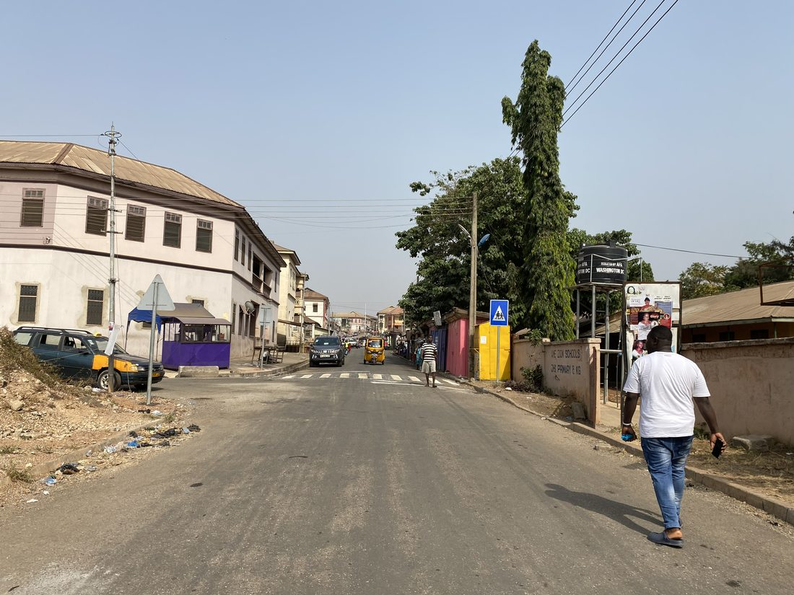

Safer school journeys
Cities built for people, not just cars.
We transform African urban mobility and spatial planning through data-driven advocacy, community-led design and the optimisation of shared urban space, starting with the streets children walk every day.